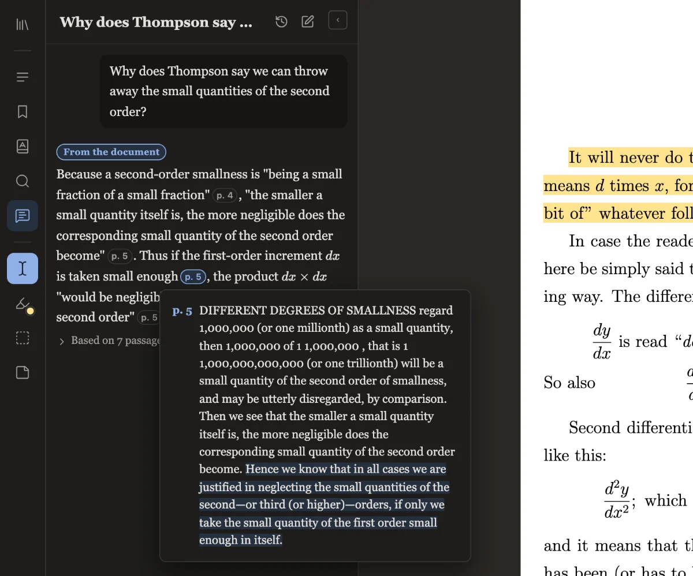

Answers you can check
Press ⌘J to ask about the whole document, one chapter or a page range. Only the relevant passages go to the model, and each claim in the reply carries a page chip.
Hover a chip to read the exact passage it rests on, or click it to jump there in the PDF. Anything the model adds from outside the document is labelled, so you know what to verify.
